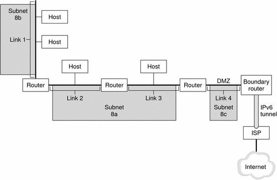

Previous
Previous
Planning an IPv6 Addressing Scheme (Overview)
This chapter presents an overview of the Solaris Internet Protocol version 6 (IPv6) implementation. This implementation includes the associated daemon and utilities that support the IPv6 address space.
IPv6 and IPv4 addresses coexist in the Solaris networking environment. Systems that are configured with IPv6 addresses retain their IPv4 addresses, if these addresses already exist. Operations that involve IPv6 addresses do not adversely affect IPv4 operations, and vice versa.
The following major topics are discussed:
For more detailed information about IPv6, consult the following chapters.
IPv6 network planning - Chapter 4, Planning an IPv6 Network (Tasks)
IPv6-related tasks - Chapter 7, Enabling IPv6 on a Network (Tasks) andChapter 8, Administering a TCP/IP Network (Tasks).
IPv6 details - Chapter 11, IPv6 in Depth (Reference)
Major Features of IPv6
The defining feature of IPv6 is increased address space in comparison to IPv4. IPv6 also improves Internet capabilities in numerous areas, as outlined in this section.
Expanded Addressing
IP address size increases from 32 bits in IPv4 to 128 bits in IPv6, to support more levels of addressing hierarchy. In addition, IPv6 provides many more addressable IPv6 systems. For more information, see IPv6 Addressing Overview.
Address Autoconfiguration and Neighbor Discovery
The IPv6 Neighbor Discovery (ND) protocol facilitates the autoconfiguration of IPv6 addresses. Autoconfiguration is the ability of an IPv6 host to automatically generate its own IPv6 address, which makes address administration easier and less time-consuming. For more information, see IPv6 Address Autoconfiguration.
The Neighbor Discovery protocol corresponds to a combination of these IPv4 protocols: Address Resolution Protocol (ARP), Internet Control Message Protocol (ICMP), Router Discovery (RDISC), and ICMP Redirect. IPv6 routers use Neighbor Discovery to advertise the IPv6 site prefix. IPv6 hosts use Neighbor Discovery for various purposes, which include soliciting the prefix from an IPv6 router. For more information, see IPv6 Neighbor Discovery Protocol Overview.
Header Format Simplification
The IPv6 header format either drops or makes optional certain IPv4 header fields. This change keeps the bandwidth cost of the IPv6 header as low as possible, despite the increased address size. Even though IPv6 addresses are four times longer than IPv4 addresses, the IPv6 header is only twice the size of the IPv4 header.
Improved Support for IP Header Options
Changes in the way IP header options are encoded allow for more efficient forwarding. Also, IPv6 options have less stringent limits on their length. The changes provide greater flexibility for introducing new options in the future.
Application Support for IPv6 Addressing
Many critical Solaris network services recognize and support IPv6 addresses, for example:
Name services, such as DNS, LDAP, and NIS. For more information on IPv6 support by these name services, see System Administration Guide: Naming and Directory Services (DNS, NIS, and LDAP).
Authentication and privacy applications, such as IP Security Architecture (IPsec) and Internet Key Exchange (IKE). For more information, see Part III, IP Security.
Differentiated services, as provided by IP Quality of Service (IPQoS). For more information, see Part VI, IP Quality of Service (IPQoS).
Failover detection, as provided by IP network multipathing (IPMP). For more information, see Part V, IPMP.
Additional IPv6 Resources
In addition to this Part, you can obtain information about IPv6 from the sources that are listed in the following sections.
IPv6 Requests for Comments and Internet Drafts
Many RFCs are available regarding IPv6. The following table lists the major IPv6 articles and their Internet Engineering Task Force (IETF) web locations as of this writing.
Table 3-1 IPv6-Related RFCs and Internet Drafts
RFC or Internet Draft | Subject | Location |
|---|---|---|
RFC 2461, Neighbor Discovery for IP Version 6 (IPv6) | Describes the features and functions of IPv6 Neighbor Discovery protocol | |
RFC 3306, Unicast--Prefix--Based IPv6 Multicast Addresses | Describes the format and types of IPv6 multicast addresses | |
RFC 3484: Default Address Selection for Internet Protocol version 6 (IPv6) | Describes the algorithms used in IPv6 default address selection | |
RFC 3513, Internet Protocol version 6 (IPv6) Addressing Architecture | Contains complete details about the types of IPv6 addresses and includes many examples | |
RFC 3587, IPv6 Global Unicast Address Format | Defines the standard format for IPv6 unicast addresses |
Web Sites
The following web sites provide useful information about IPv6.
Table 3-2 IPv6-Related Web Sites
Web Site | Description | Location |
|---|---|---|
IPv6 Forum | Links to IPv6-related presentations, events, classes, and implementations worldwide are available from this society's web site | |
Internet Educational Task Force IPv6 Working Group | Links to all relevant IPv6 RFCs and Internet Drafts are on the home page of this IETF working group | |
UK IPv6 Resource Center | Materials and links that are related to the 6bone, the international test IPv6 network, and University of Lancaster IPv6 projects are on this web site of University of Lancaster UK |
IPv6 Network Overview
This section introduces terms that are fundamental to the IPv6 network topology. The following figure shows the basic parts of an IPv6 network.
Figure 3-1 Basic Components of an IPv6 Network
The figure depicts an IPv6 network and its connection to an ISP. The internal network consists of Links 1, 2, 3, and 4. Each link is populated by hosts and terminated by a router. Link 4, which is the network's DMZ, is terminated on one end by the boundary router. The boundary router runs an IPv6 tunnel to an ISP, which provides Internet connectivity for the network. Links 2 and 3 are administered as Subnet 8a. Subnet 8b consists only of systems on Link 1. Subnet 8c is contiguous with the DMZ on Link 4.
As illustrated in Figure 3-1, an IPv6 network has essentially the same components as an IPv4 network. However, IPv6 terminology differs slightly from IPv4 terminology. Here is a list of familiar terms for network components as they are used in an IPv6 context.
node | Any system with an IPv6 address and interface that is configured for IPv6 support. This generic term applies to both hosts and routers. |
IPv6 router | A node that forwards IPv6 packets. At least one of the router's interfaces must be configured for IPv6 support. An IPv6 router can also advertise the registered IPv6 site prefix for the enterprise over the internal network. |
IPv6 host | A node with an IPv6 address. An IPv6 host can have more than one interface that is configured for IPv6 support. As in IPv4, IPv6 hosts do not forward packets. |
link | A single, contiguous network medium that is bounded on either end by a router. |
neighbor | An IPv6 node that is on the same link as the local node. |
IPv6 subnet | The administrative segment of an IPv6 network. Components of an IPv6 subnet can directly correspond to all nodes on a link, as in IPv4. Nodes on a link can be administered in separate subnets, if required. Additionally, IPv6 does support multilink subnets, where nodes on more than one link can be components of a single subnet. Links 2 and 3 in Figure 3-1 are components of multilink Subnet 8a. |
IPv6 tunnel | A tunnel that provides a virtual point-to-point path between an IPv6 node and another IPv6 node endpoint. IPv6 supports manually configurable tunnels and automatic 6to4 tunnels. |
boundary router | The router at the edge of a network that provides one end of the IPv6 tunnel to an endpoint outside the local network. This router must have at least one IPv6 interface to the internal network. For the external network, the router can have an IPv6 interface or an IPv4 interface. |